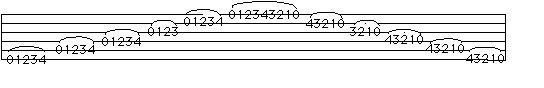

Legato Chromatic Scale

1 - only the first note on each string is sounded by the right hand, the rest are either "hammer-ons" or "pull-offs".
2 - make sure the left hand thumb is not squeezing too tight.
3 - keep the fingers close to the strings and fingertips pointing at the strings. Play on the fingertips.
4 - While ascending, fingers can be left down on each string, so that by the time the fourth finger hammers-on, all four fingers are on the string. Also practice without keeping the fingers down.
5 - While descending, all four fingers can be placed simultaneously, and pulled-off one at a time, or they can be placed in pairs. (To do a pull-off, at least the starting note finger and the finishing note finger must be placed simultaneously.)
6 - Try to cultivate a "rolling" motion both ascending and descending. Repeat continuously until fatigue is felt in the hand and forearm. Pain in the meaty part at the base of the thumb indicates tension and squeezing too hard.
7 - Keep the wrist as straight as possible, and keep the knuckles parallel with the neck. It is also possible to do the descending portion using a more angled hand position and relaxed fingers so the first joint of the fingers flex when the pull-offs are executed. Think of how violinists hold their hand to get an idea of the position.
8 - Although this is ultimately the best first warm up exercise, it will only be mastered after the legato combinations are mastered.